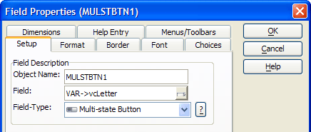

Creating and Using a Multi-state Button
The MULSTBTN1 multi-state button presents a simple way to limit the Browse1 list to those records where the SearchBy field begins with the selected letter.
Multi-State Button Options
Multi-state buttons are similar in purpose to list boxes.
The user can select one of several pre-defined values.
The control always displays the selected value.
The display value and the stored value can be different.
The primary differences from a list box are that the multi-state button:
Displays a button for each of the pre-defined values.
Can have vertical or horizontal orientations.
Can substitute bitmap images for text.
Can change the bitmap when the button is clicked.
Procedure: Configuring the MULSTBTN1 Multi-State Button
The following procedure assumes that the developer has opened the form in the Form Editor. Follow these instructions to create a multi-state button similar to MULSTBTN1 :
Draw a multi-state button on the form.
Right click the control and select Properties....
In the Field list select the appropriate field in your table or variable on your form. In this case the user selection is stored into the variable vcLetter.

Click the Choices tab.
Select "Text only" in the Display list.
Enter your choices in the large type-In box, one line per entry. You only need to enter the first character of each line. Alpha Anywhere will add the rest. The pipe "|" character separates the display value (the character on the left) from the stored value (the character on the right). In this case, both the display and stored values are the same, but they may be different. Picture
{kind=link}
Click the OK button to return to the Form Editor.
Xbasic Code Run by the MULSTBTN1 on
The MULSTBTN1 on
|
dim tbl as P topparent:tables:customer.filter_expression = "left("+searchby.text+", 1) = '" + mulstbtn1.text + "'" topparent:tables:customer.order_expression = searchby.text topparent:tables:customer.query() tbl = table.current() i = tbl.index_primary_get() count = i.records_get() if count = 0 ui_msg_box("Warning", "No records found. Showing all records") tbl.order(searchby.text,searchby.text + " <> \"\"") browse1.refresh() mulstbtn1.text = "1" end if |
An Explanation of the Code
The first line creates a pointer variable named tbl to refer to table (and the data) that the Customer Information form displays.
|
dim tbl as P |
The next line sets the filter_expression property of the form: topparent:tables:customer. This works when you know the name of the table. The code sets the filter_expression to be the first character selected field ( searchby.text ).
|
topparent:tables:customer.filter_expression = "left("+searchby.text+", 1) = '" + mulstbtn1.text + "'" |
This line sets the order_expression property of the form. It says to order the query results on the field defined by searchby.text. The default sort order is ascending.
|
topparent:tables:customer.order_expression = searchby.text |
The next line executes a new query against the customer table. The query() method knows to use the filter_expression and order_expression properties of the form.
|
topparent:tables:customer.query() |
This line sets the tbl pointer equal to the customer table.
|
tbl = table.current() |
Next, we get a pointer to the table's primary index. The variable i is implicitly dimmed as P (a pointer).
|
i = tbl.index_primary_get() |
The records_get() method returns a count of records for the table. The variable count is implicitly dimmed as N (numeric).
|
count = i.records_get() |
If the count variable is equal to 0, then display a message box that the query is empty.
|
if (count = 0) then ui_msg_box("Warning", "No records found. Showing all records") |
The order() method sorts the table (parameter one) on searchby.text, which is the name of a field, and restricts the results (parameter two) to records not equal to NULL. The backslash \ escape character precedes the quote " character to show that the quote is to be interpreted as a character and not as Part of the syntax.
|
tbl.order(searchby.text,searchby.text + " <> \"\"") |
Force browse1 to display the new results.
|
browse1.refresh() |
Reset the MULSTBTN1 multi-state button. Chose '1' because it is not in the set A-Z and thereby de-selects any previously selected letter.
|
mulstbtn1.text = "1" end if |
See Also
Creating a Button that Calls an Action Script, Creating a Button that Calls an Xbasic Script, Creating a Button with a Bitmap, Using Action Script to Select a Record and Display a Form